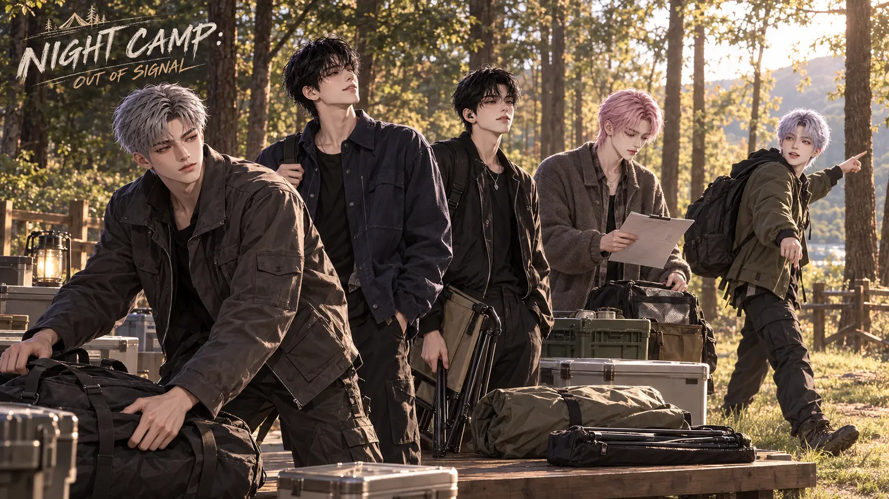
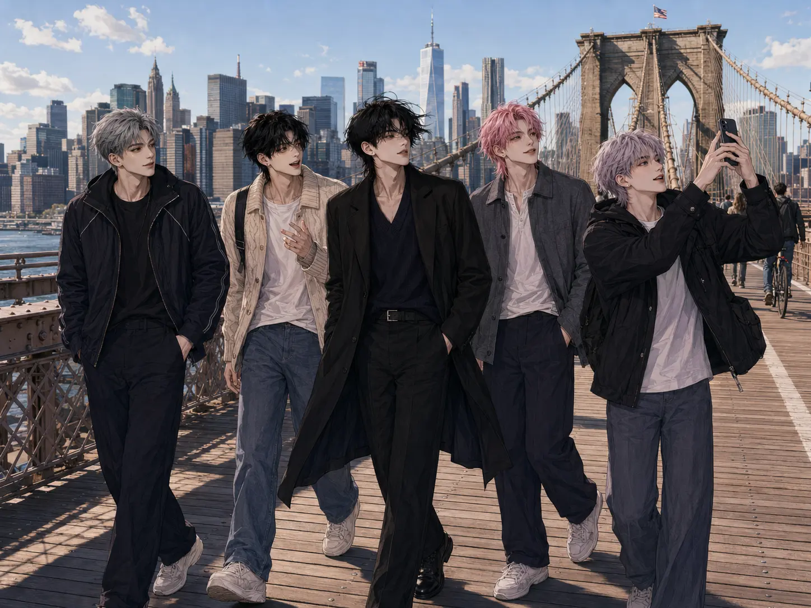
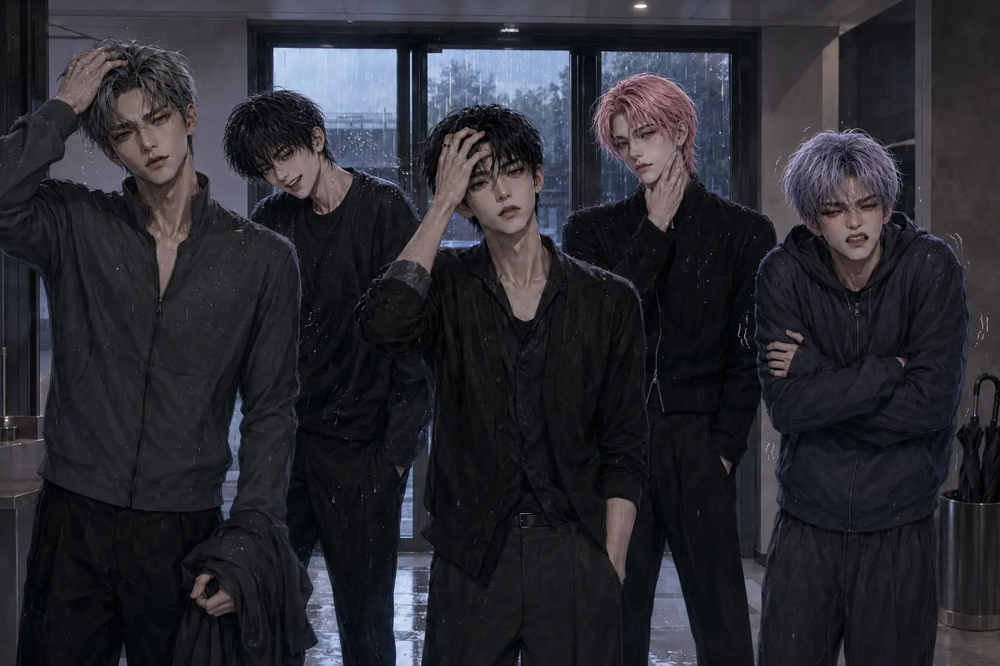
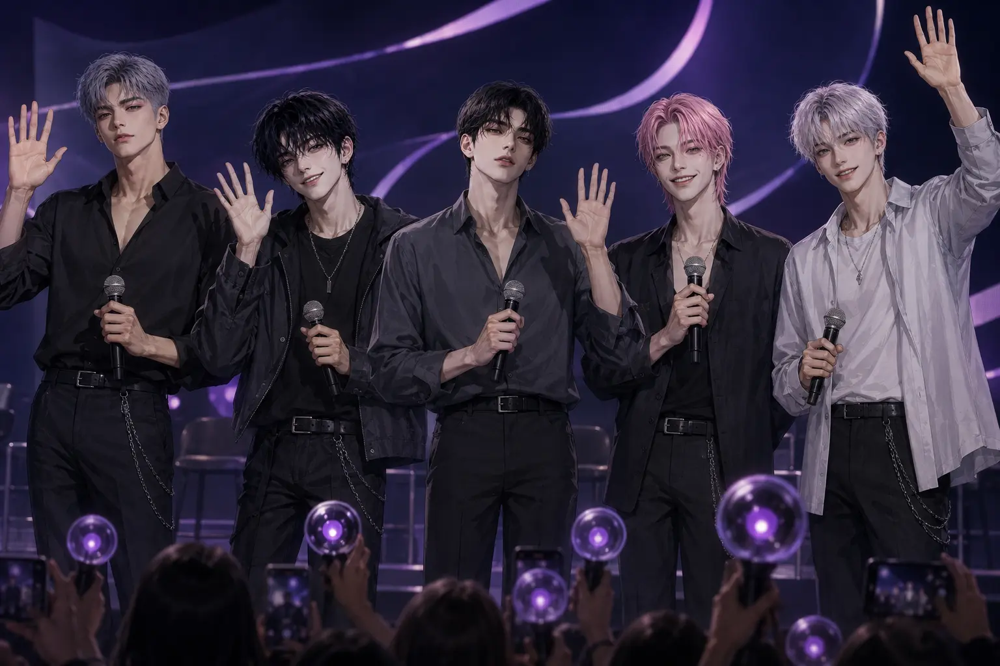
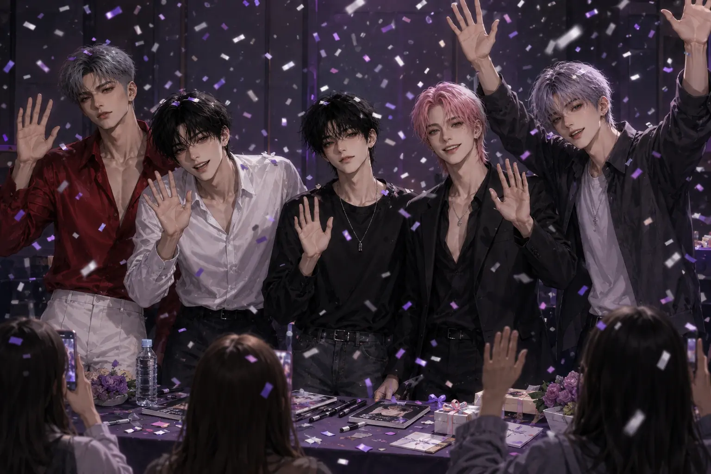

NIGHT OFFICIAL CONTENTS
Beyond the Stage.
카메라가 켜진 순간부터 무대가 끝난 뒤의 밤까지. NIGHT의 이야기와 여행, 웃음과 기억을 한곳에 모았습니다.
EXPLORE THE ARCHIVE ↓Eight Ways Into NIGHT
Choose a story.
자체 콘텐츠부터 멤버들의 일상과 여행, 팬들과 함께한 순간까지 원하는 기록을 선택해 감상해 보세요.

01 PHOTO EPISODES · 5 STORIESNIGHT ORIGINALS호텔, 야근, 캠핑, 꽃집 그리고 진짜 막내. 다섯 멤버가 함께 만드는 NIGHT만의 이야기.WATCH THE EPISODES → 02
PHOTO VLOG · 6 EPISODESNIGHT VLOG풋살, 연습실, 휴식과 숙소의 저녁. 사진으로 이어 보는 다섯 멤버의 하루.PLAY THE VLOG →
02
PHOTO VLOG · 6 EPISODESNIGHT VLOG풋살, 연습실, 휴식과 숙소의 저녁. 사진으로 이어 보는 다섯 멤버의 하루.PLAY THE VLOG →

03 LOS ANGELES · LAS VEGAS · NEW YORKTRAVEL LOG무대 밖으로 나선 다섯 멤버가 도시의 빛 사이에 남긴 여행 기록.BEGIN THE JOURNEY →
04 OFFICIAL BEHIND ARCHIVEBEHIND LOG연습실과 스케줄 사이, 무대가 끝난 뒤에도 계속되는 NIGHT의 기록.OPEN THE ARCHIVE →
05 FANMEETING · MOMENTS WITH LUNAFANMEETING ARCHIVE무대 위 대화와 장난, 팬들과 함께 완성한 특별한 하루를 다시 만나는 공간.RELIVE THE MOMENTS →
06 2026.09.19 · PHANTOM RELEASE EVENTPHANTOM FANSIGN앨범 발매 후 LUNA와 가까이 마주한 NIGHT. 팬사인회 현장의 열여섯 장면을 담은 공식 기록.VIEW THE MOMENTS → 072026.12.10 · WINTER SPECIAL ALBUMAFTER HOURS프로모션과 콘셉트 포토부터 앨범 패키지, 포토북과 무대까지 이어지는 겨울 스페셜 기록.ENTER AFTER HOURS →
072026.12.10 · WINTER SPECIAL ALBUMAFTER HOURS프로모션과 콘셉트 포토부터 앨범 패키지, 포토북과 무대까지 이어지는 겨울 스페셜 기록.ENTER AFTER HOURS →
 082026.12.15 · OFFICIAL EVENT ARCHIVEYEAR-END AWARDS레드카펫, 시상식 무대와 소감, 백스테이지까지 시간 순서로 만나는 열두 장면.VIEW THE NIGHT →
082026.12.15 · OFFICIAL EVENT ARCHIVEYEAR-END AWARDS레드카펫, 시상식 무대와 소감, 백스테이지까지 시간 순서로 만나는 열두 장면.VIEW THE NIGHT →
More Archives
More sides of NIGHT.
공식 화보와 캠페인은 GALLERY에서, LUNA와 함께하는 기록과 공식 MD는 FANCLUB에서 이어집니다.